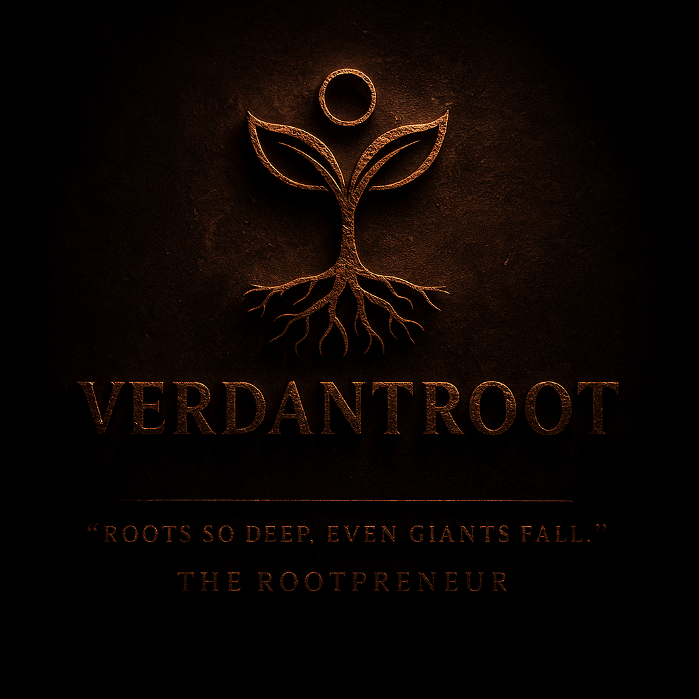

AI-Assisted Skin Intelligence designed to help people understand their skin before visiting a clinic.
Start Skin AnalysisVerdant Root is an early-stage concept focused on building affordable AI-assisted skin guidance. The goal is to help people, especially in Tier-2 and Tier-3 regions, understand their skin concerns before visiting a dermatologist.
The platform aims to combine artificial intelligence, dermatology awareness, and accessible digital tools to make skin guidance more affordable and more informed.
1. Upload a facial image and answer a few guided questions.
2. The system analyzes visible patterns related to common skin concerns.
3. Users receive general guidance and may connect with dermatology professionals if needed.
Verdant Root is being built by Sumit Kadian, a high school student in India preparing for the National Eligibility cum Entrance Test (NEET).
The vision is to explore how technology and healthcare awareness can work together to make early skin guidance more accessible and affordable.
For collaboration, ideas, or questions:
verdantroot@gmail.com